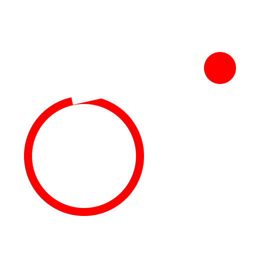
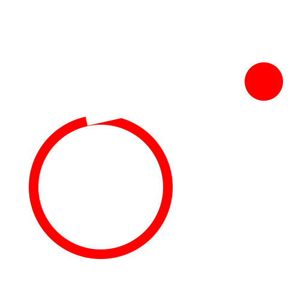
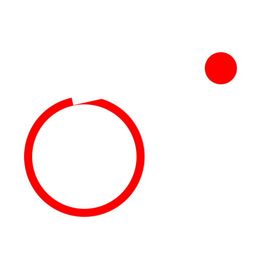
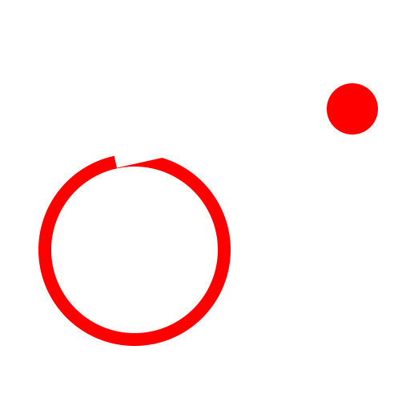
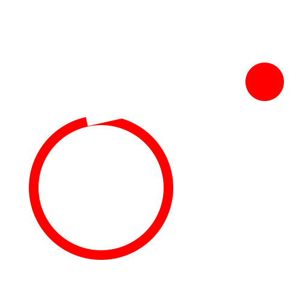

Tangenta (točka, krog)
Toolbar / Icon:

Menu:
Risanje - Črta - Tangenta (točka, krog)
Shortcut:
L, T, 1
Commands:
linetangent | tangent | lt1
Description:
Konstruira tangento iz ene koordinate na en obstoječ krog, lok ali elipso.
 


